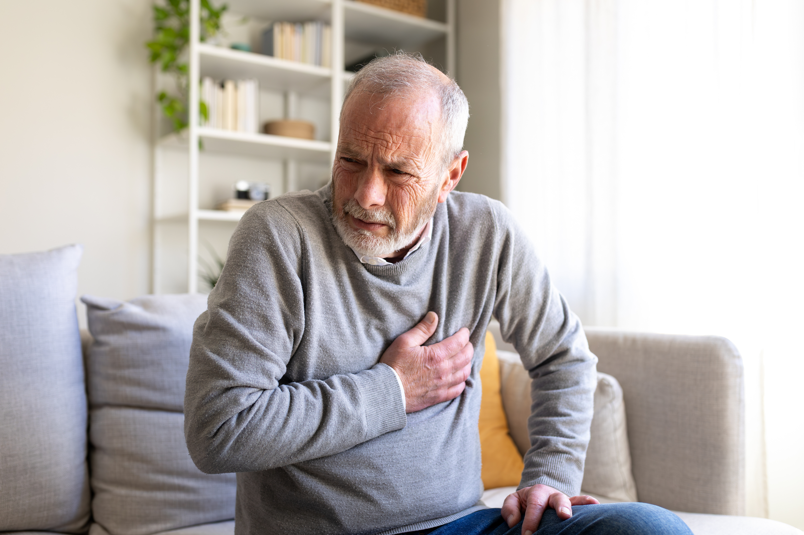
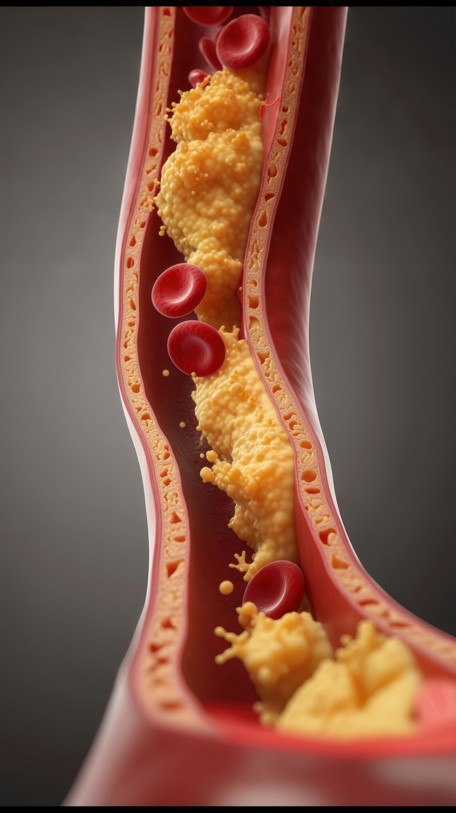
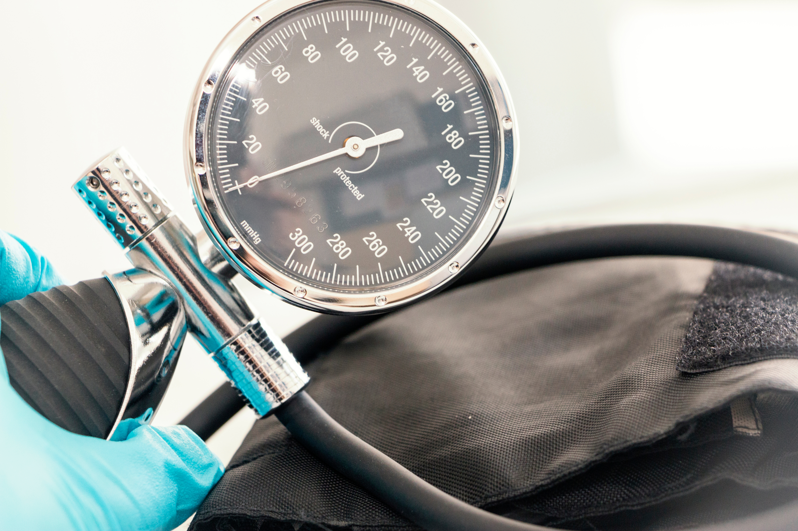

CID I21
Infarto
Entenda como acontece, os fatores de risco e como cuidar do coração.
Imagem meramente ilustrativa. Paciente fictício.
Imagem meramente ilustrativa. Paciente fictício.
O que é o infarto?
O infarto, acontece quando o fluxo de sangue rico em oxigênio para uma região do músculo do coração é interrompido. Quando essa obstrução não é tratada rapidamente, as células dessa região começam a sofrer danos e podem morrer.1
Na maioria dos casos, o infarto está relacionado à doença arterial coronariana, caracterizada pelo estreitamento das artérias responsáveis por levar sangue ao coração.1
Como acontece um infarto?
Ao longo do tempo, gordura, colesterol, cálcio e outras substâncias presentes no sangue podem se acumular na parede das artérias, formando as chamadas placas de aterosclerose. Esse processo pode estreitar os vasos e reduzir progressivamente a passagem do sangue.1
Em algumas situações, uma dessas placas se rompe. O organismo responde formando um coágulo no local e, se esse coágulo bloquear a artéria coronária, o sangue deixa de chegar adequadamente a uma parte do músculo cardíaco, provocando o infarto.1
Embora a aterosclerose seja a causa mais comum, existem situações menos frequentes em que o infarto pode ocorrer por outros mecanismos, como espasmos das artérias coronárias, embolias ou dissecção espontânea da artéria coronária.1
O que aumenta o risco de infarto?
O risco cardiovascular é resultado da combinação de diferentes fatores. Alguns podem ser modificados ao longo da vida, enquanto outros, como idade e histórico familiar, não podem ser alterados.1
Entre os principais fatores associados ao risco estão:
- colesterol elevado;
- hipertensão arterial;
- diabetes ou glicemia elevada;
- triglicérides altos;
- excesso de peso ou obesidade;
- tabagismo;
- sedentarismo;
- alimentação inadequada;
- idade e histórico familiar de doença cardíaca precoce.
Quanto maior o número de fatores presentes, maior pode ser o risco cardiovascular. Por isso, a prevenção não depende de uma única medida, mas do cuidado conjunto com diferentes aspectos da saúde.1
Qual é a relação entre
colesterol LDL e infarto?
O LDL-c, popularmente conhecido como colesterol "ruim", pode se acumular na parede das artérias. Com o passar do tempo, esse processo contribui para seu estreitamento e aumenta o risco de eventos cardiovasculares, como infarto e acidente vascular cerebral.2
A exposição das artérias ao LDL ao longo da vida tem papel importante no desenvolvimento e na progressão da aterosclerose. Por isso, reduzir essa exposição é uma das estratégias para diminuir o risco cardiovascular.3
O colesterol elevado muitas vezes não provoca sintomas.
Dessa forma, realizar exames periódicos é importante para conhecer os níveis de LDL-c e discutir com o médico qual meta é adequada para cada pessoa.2

Imagem meramente ilustrativa.
É possível reduzir o risco de infarto?
Embora nem todos os fatores de risco possam ser modificados, mudanças no estilo de vida e o tratamento adequado de condições como colesterol alto, hipertensão e diabetes podem ajudar a reduzir a probabilidade de um evento cardiovascular.1
Entre as principais estratégias estão:1
- manter uma alimentação adequada;
- realizar atividade física regularmente;
- não fumar;
- controlar o peso;
- administrar o estresse;
- acompanhar as condições clínicas que aumentam o risco.
Estudos observacionais também mostram que a combinação de hábitos de baixo risco cardiovascular está associada a uma incidência significativamente menor de infarto.4
Imagem meramente ilustrativa.
Alimentação e prevenção do infarto
A alimentação faz parte dos cuidados para prevenção das doenças cardiovasculares. Priorizar alimentos in natura ou menos processados possíveis e reduzir o consumo de produtos com grandes quantidades de gorduras, sódio e açúcares pode contribuir para a saúde do coração.2
Frutas, verduras, legumes, feijões e outros alimentos de origem vegetal podem fazer parte de uma alimentação equilibrada, enquanto o consumo excessivo de alimentos ultraprocessados deve ser evitado.2
O cuidado com a alimentação também se relaciona ao controle de outros fatores cardiovasculares, como colesterol, pressão arterial, diabetes e excesso de peso.2
E depois de um infarto?
Sofrer um infarto pode trazer dúvidas, insegurança e mudanças importantes na rotina. Depois do evento, o cuidado passa a ter também o objetivo de reduzir o risco de um novo problema cardiovascular.2
O acompanhamento com o cardiologista é uma parte importante da recuperação. As consultas permitem acompanhar a evolução, avaliar fatores de risco e ajustar o tratamento quando necessário.2
Também é fundamental seguir corretamente as orientações médicas e utilizar os medicamentos conforme prescritos, mesmo quando a pessoa se sente bem.2

Imagem meramente ilustrativa.
Infartei. E agora?
Sofrer um infarto pode mudar a vida, mas a recuperação continua depois desse momento. Manter os cuidados com a saúde e acompanhar o colesterol são passos importantes para reduzir o risco de um novo evento cardiovascular.
Conheça a campanhaArtigos relacionados
Referências
1. National Heart, Lung, and Blood Institute (NHLBI), National Institutes of Health. Heart Attack – Causes and Risk Factors. Disponível em: https://www.nhlbi.nih.gov/health/heart-attack/causes. Acesso em Setembro de 2026.
2. American Heart Association. Lower Your LDL. Disponível em: https://www.heart.org/en/health-topics/cholesterol/hdl-good-ldl-bad-cholesterol-and-triglycerides/lower-your-ldl. Acesso em Setembro de 2026.
3. Ference BA, Graham I, Tokgozoglu L, Catapano AL. Impact of Lipids on Cardiovascular Health: JACC Health Promotion Series. J Am Coll Cardiol. 2018;72(10):1141-1156. doi:10.1016/j.jacc.2018.06.046.
4. Åkesson A, Larsson SC, Discacciati A, Wolk A. Low-risk diet and lifestyle habits in the primary prevention of myocardial infarction in men: a population-based prospective cohort study. J Am Coll Cardiol. 2014;64(13):1299-1306. doi:10.1016/j.jacc.2014.06.1190.
5. Diabetes e infarto. SBD. Disponível em: https://diabetes.org.br/pessoas-com-diabetes-tem-o-dobro-de-risco-para-infarto-agudo-do-miocardio/. Acesso em Setembro de 2026.
6. Heart attack recovery and rehabilitation. Cleveland Clinic. Disponível em: https://my.clevelandclinic.org/health/articles/17055-heart-attack-recovery--cardiac-rehabilitation. Acesso em Setembro de 2026.
7. Smoking and heart disease. Better Health Channel. Disponível em: https://www.betterhealth.vic.gov.au/health/healthyliving/smoking-and-heart-disease. Acesso em Setembro de 2026.
Material destinado ao público leigo. 2026 © Direitos Reservados Novartis Biociências S/A – Proibida a reprodução total ou parcial não autorizada. Atualizado em 22 de setembro de 2026.
BR-39748